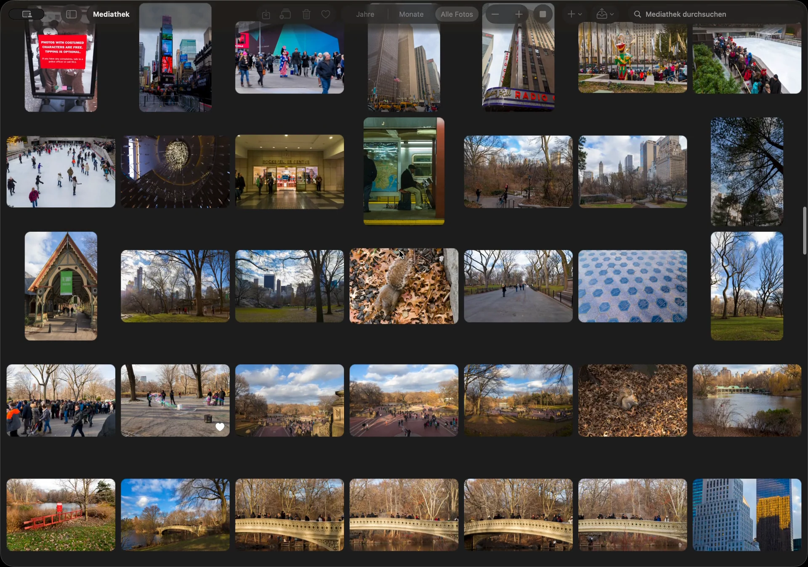
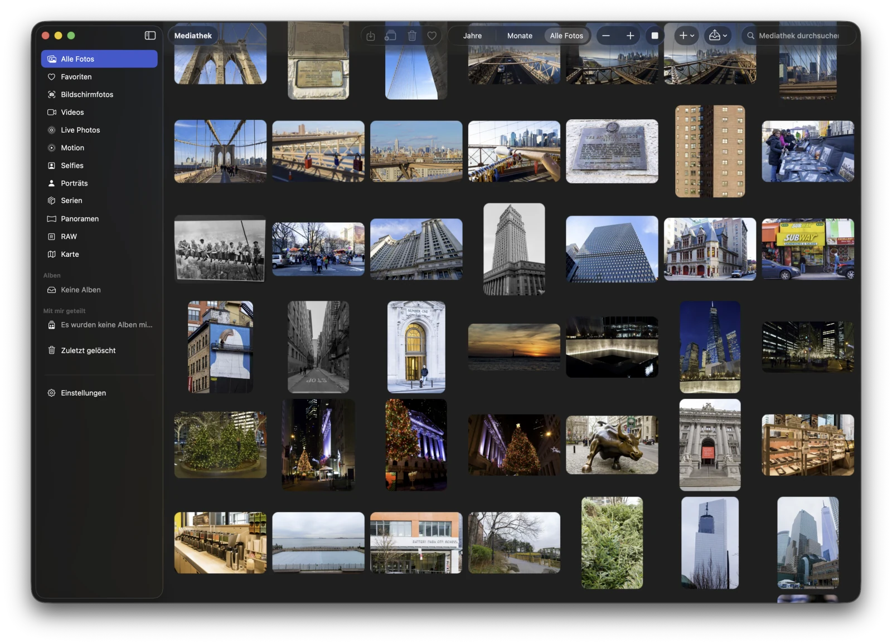
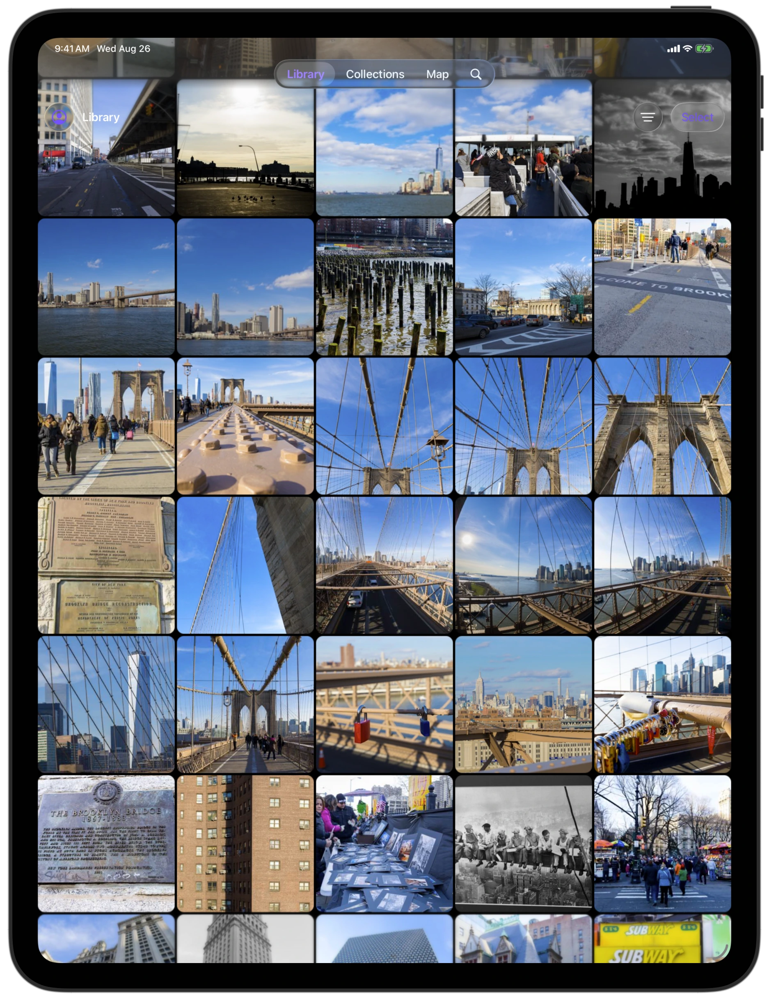
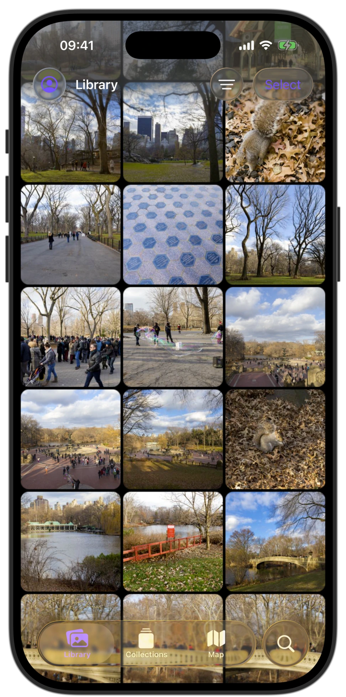
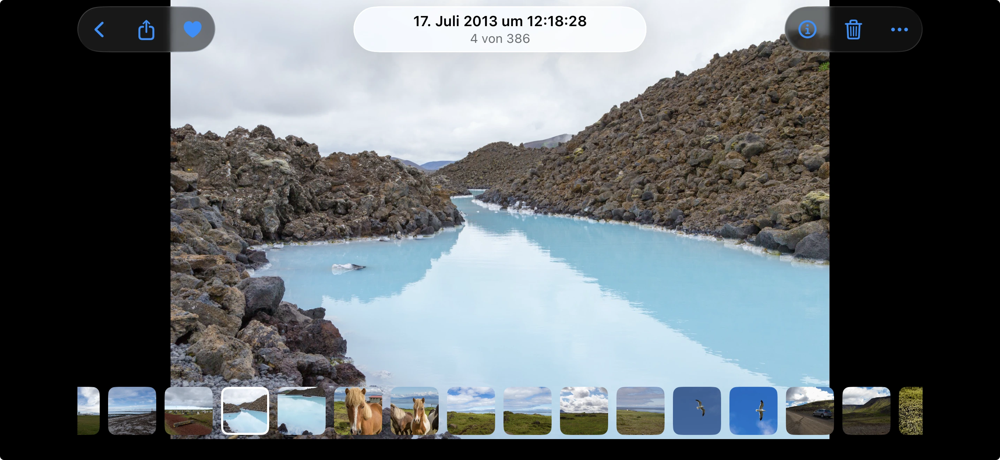

01 · Metal Grid
See more of your library at once.
Metal Grid keeps a responsive, fluid view across iPhone, iPad, and Mac. Move through years of photos without losing the shape of your library.

Independent photo companion for Proton Drive
A focused native photo library for the pictures you keep in Proton Drive on iPhone, iPad, and Mac.
Existing Proton account required · Open source
Native app stage



Native across Apple platformsOne library. Every screen.
The experience
01 · Metal Grid
Metal Grid keeps a responsive, fluid view across iPhone, iPad, and Mac. Move through years of photos without losing the shape of your library.

02 · Full-resolution viewing
See every detail in a distraction-free viewer, mark a favorite with one tap, and move naturally through the moments around it.

03 · Private on-device Smart Search
Private on-device Smart Search helps you find a photo in your Proton Drive library. Search processing and queries stay on-device; Smart Search does not upload photos for analysis.
Privacy and independence
Encrypted Memories is an independent native client for Proton Drive. It uses the Proton Drive SDK to access your encrypted library, keeps Smart Search on-device, and never receives your Proton password.
Open source and support
Encrypted Memories is free, MIT-licensed software. Read the code, report a bug, or find help when you need it.
Encrypted Memories is not affiliated with or endorsed by Proton AG.